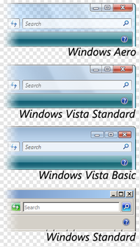

Vista zahrnuje 4 styly a to: Windows Aero, Windows Vista, Windows Vista Basic a Windows Standard
Windows Aero je postaven na kompozitním enginu zvaném Desktop Window Manager (DWM), díky kterému poskytuje plynulý pohyb oken, přináší pomocí podpory 3D grafiky nové vlastnosti jako efektní přepínání oken (Windows Flip 3D), průhlednost oken a nabídek, hezčí ikonky přizpůsobené i vyšším rozlišením apod.
Toto rozhraní má specifické požadavky na hardware, které bývají terčem kritiky.
Je třeba použít grafickou kartu podporující WDDM, minimum je 128 MB grafické paměti v závislosti na použitém rozlišení.
V edicích Windows Vista Starter a Home Basic není Aero obsaženo.
Obdobně jako Windows Aero používá DWM, ale některé efekty jako Windows Flip 3D, průhlednost a některé animace oken jsou vypnuté, hardwarové nároky jsou obdobné jako u plnohodnotného Aera.
Tento vzhled je určen pro edici Home Basic, kde nahrazuje Aero.